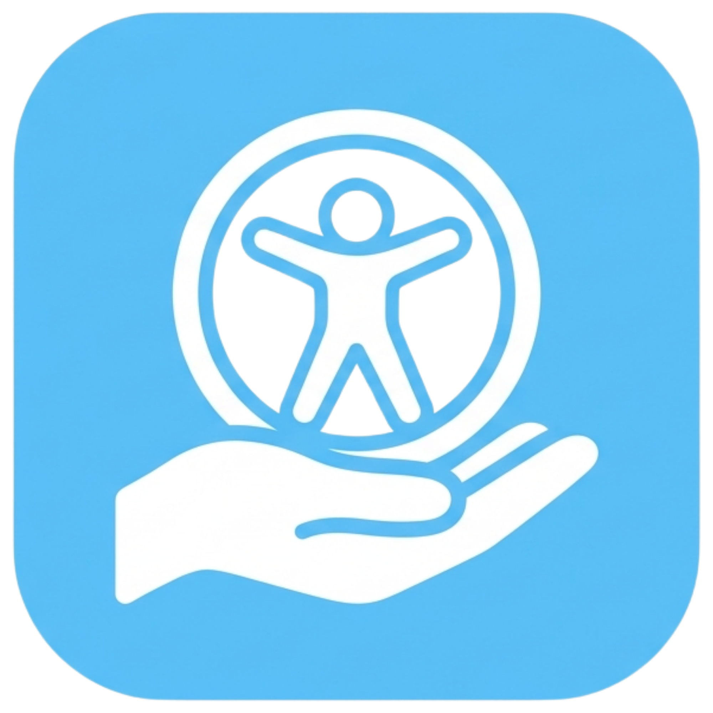

People with motor differences
Limited hand strength, tremors, RSI, fatigue, or anything else that makes the physical click difficult or painful.

Accessibility Surfer.Hover to click. No button needed. Accessibility Surfer adds dwell clicking to every website, with smart YouTube targeting on top.
We're recording Accessibility Surfer in action — the ring filling on a YouTube thumbnail, the countdown pill ticking on a player button, and a universal hover-click opening a Wikipedia article. All without pressing a button.
Accessibility Surfer watches your cursor and clicks for you. Hover any link, button, input, or video thumbnail and after a few seconds it clicks itself. Built for anyone who can move a cursor with a mouse, head tracker, or eye gaze device but can't easily press a button. Works on every website out of the box.
If you can move a cursor but can't easily press a button, Accessibility Surfer is for you. It works with any input that controls a pointer.
Limited hand strength, tremors, RSI, fatigue, or anything else that makes the physical click difficult or painful.
Devices that move the cursor with a head, gaze, or other alternative input but don't always fire a real click on their own.
Drop-in Chrome extension. Install once, use on any laptop or Chromebook. No configuration to ship.
Move your cursor — Accessibility Surfer handles the rest.
Links, buttons, inputs, video thumbnails, dropdowns. A ring appears centered on whatever your cursor is on.
The ring fills clockwise with a number ticking down: 3 → 2 → 1. Default 3 seconds, adjustable in the popup.
At zero, the ring flashes green and a real click fires. Links navigate, buttons activate, inputs focus.
Tap Space, click the floating button on any page, or open the toolbar popup. Off means off everywhere.
Works on every site automatically. Links, buttons, inputs, dropdowns, even custom role="button" elements. No per-site setup.
5-second dwell on thumbnails with the full ring, 3-second silent countdown on player and UI buttons in a status pill at the top.
Change the font (OpenDyslexic, Lexend, Atkinson Hyperlegible, Arial), size, line height, and letter and word spacing on any page.
Move off and back on the same element within a second and the countdown picks up where it left off, so brief tremors don't reset progress.
Strips distractions and leaves just the article in a fully customizable column.
One paragraph at a time, advances automatically on dwell — works hands-free.
Gradually adjusts font size and spacing as you read deeper into a long article.
Hover complex words to see a plain-English alternative. No internet connection needed.
OS-level dwell tools live in system settings and treat the web as a generic surface. Accessibility Surfer lives in the browser and is tuned for it.
Install once and Accessibility Surfer goes everywhere your browser does. Universal mode handles the long tail of the web with a 3-second dwell on any interactive element. Smart YouTube mode layers extra targeting on top.
5-second dwell ring on video thumbnails. 3-second silent countdown on player and UI buttons in a top status pill. Click anything, no mouse button required.
Wikipedia, news, web apps, social media, banking — anywhere. A single 3-second dwell (adjustable) on every link, button, input, and dropdown.
Accessibility Surfer is a free Chrome extension in active development. Get in touch to install the current build, share feedback, or hear when it lands on the Chrome Web Store.
We typically respond within 2 business days.